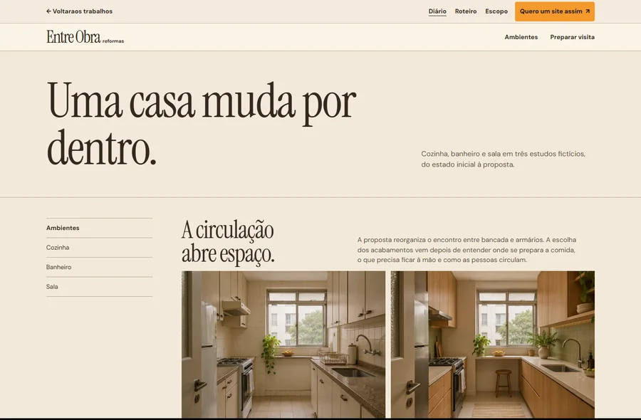
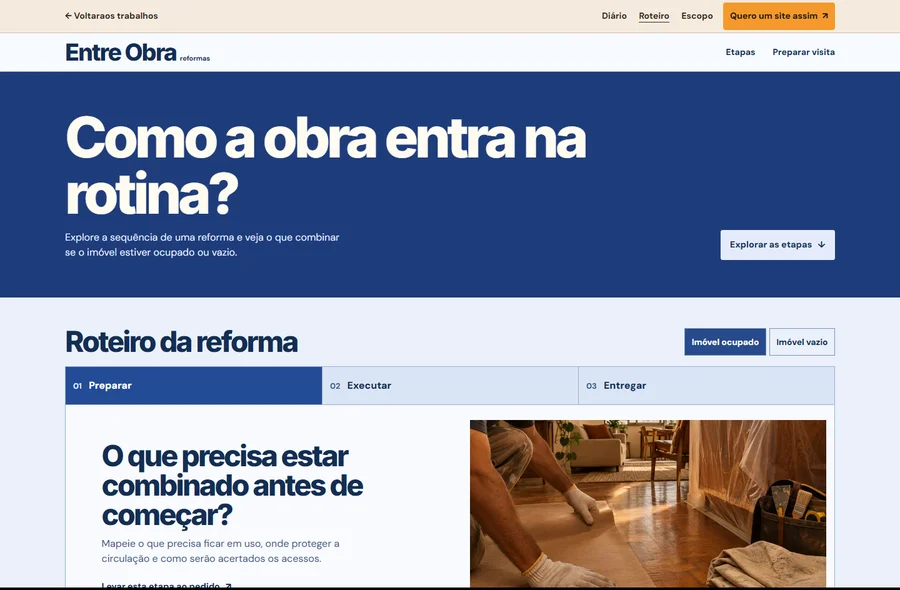
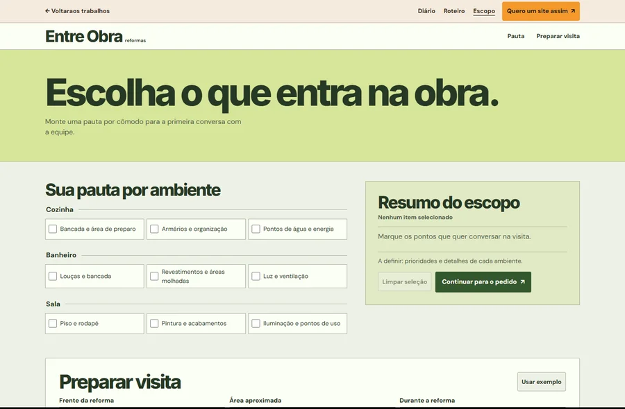

Diário
Um diário com estados iniciais e propostas ilustrativas, organizado por ambiente.
Abrir demonstraçãoTrês formas de entender o que uma reforma pode pedir. Explore ambientes, etapas e escolhas antes da visita.

Um diário com estados iniciais e propostas ilustrativas, organizado por ambiente.
Abrir demonstração
Um roteiro para conversar sobre acesso, circulação e etapas da reforma.
Abrir demonstração
Uma pauta que reúne cômodos e prioridades antes da primeira visita.
Abrir demonstração